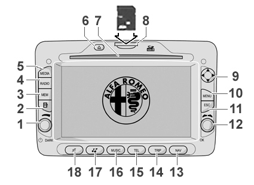

|


|
|
| Service News | ||
|
|
Various models
All models (Alfa 159 - Brera/Spider) |
|
|||
| 5570 T 000 AA |
RADIONAV NAVIGATION SYSTEM
SD-Card activation procedure and system description - Network Information |
|||

|
Cancels and replaces SN 55.11.09 of 17/09/2009 for the addition of on-line activation of the SD-Card. |
General information
Upon demand, the car can be supplied with a navigation system, available in the following two outfits:
-RADIONAV combined with the "basic" radio: in this case, the mobile is not handled; the navigation functions are managed by the radionavigator and displayed as maps.-RADIONAV combined with the "Blue&Me": in this case the radionavigator manages navigation and Blue&Me manages the Media Player and Bluetooth mobile functions;Fig. 1

The radio navigator module, located in the middle of the dashboard, includes:
-radio module with dual aerial and dual tuner;-CD Audio and CD MP3 player;-SD card reader;-GPS module;-autonomous navigation module with maps;-6.5" TFT colour, high-resolution display;-interfacing with steering wheel controls (where specified)For further information, descriptions and operation, fault diagnosis, tests, repair procedures and wiring diagrams, refer to the Service Manual.
The key below describes the functions of the buttons shown in Fig. 1.
| Some controls have different functions depending on the currently-activated application. The activation of the function selected is controlled, in some cases, by how long the button is pressed (short or long pressing) as described in the table below: |
|
Button |
Short button pressing (less than 2 seconds) |
Long pressing of the button (over 2 seconds) |
|
1 - DARK |
Pressing on the button: system switching-on/DARK function activation Knob rotation: volume level setting |
Pressing on the button: system switching on/off |
|
2 |
Radio Mode: display of radio station names in the selected band CD Mode: display of tracks available on the CD CD MP3 mode: displaying of folder and track list |
Radio mode: station list updating (pressing for over 5 seconds) |
|
3 - MEM |
Access to the menu to select stored radio stations |
Access to the menu to store the selected radio station |
|
4 - Radio |
Radio Mode activated: radio band selection (FM1, FM2, FMAST, AM) Radio Mode deactivated: displaying of special menu and radio band selection (FM1, FM2, FMAST, AM) |
Radio mode: activation of AutoSTore function |
|
5 - MEDIA |
Source selection: Media Player or CD |
- - |
|
6 - |
Eject audio CD or CD MP3 | |
|
7 - |
Audio CD or CD MP3 housing |
- - |
|
8 - |
SD-Card housing | |
|
9 Arrow Up |
Radio mode: frequency increase (FM or AM mode) CD - MP3 mode: select next folder Map Mode: map scrolling upwards Media Player Mode: select genre/author/album/folder/next Playlist depending on the selection mode currently activated | |
|
9 Right - Left Arrow |
Radio Mode: scanning function to search for the first audible radio station with frequency lower/higher than the starting one (FM or AM mode) CD/CD MP3/Media Player Mode: select next/previous track Map Mode: map scrolling to the left/to the right | |
|
9 Arrow Down |
Radio mode: frequency decrease (FM or AM mode) CD - MP3 mode: select previous folder Map Mode: map scrolling downwards Media Player Mode: select genre/author/album/folder/previous Playlist depending on the selection mode currently activated | |
|
10 - Menu |
Main Menu Display |
Access to the navigation simulation function |
|
11 - ESC |
Exit from the selection |
System reset (if pressed for more than 8 seconds) |
|
12 - OK |
Pressing on the button: open special menu; Confirm selection Knob rotation: select menu items | |
|
13 - NAV |
Navigation map displaying | |
|
14 - TRIP |
TRIP data displaying | |
|
15 - TEL |
Mobile data displaying (only if the Blue&MeTM system is available) | |
|
16 - MUSIC |
Music information display | |
|
17 |
Audio Menu Display |
- - |
|
18 |
Activation/deactivation of Audio function |
Sd-card activation procedure
Foreword
Unless it has already been activated for map management, the navigation system uses the SD-Card map for the first 1000 km run by the car.
How to enable an SD-Card
An activation code is needed for unlimited map SD-Card access in your system.
The activation code can be requested by phone or on-line, connecting to the Web site.
Data required to receive the activation code
To receive the activation code, you need to know the following information:
1. Device Code (it can be obtained as follows)
-A. Press the button MENU (10 – Fig. 1) to enter the navigation system menu.-B. Turn the right knob, select "CONFIGURATIONS" and press the knob to confirm.-C. In the menu, select the "SD CARD - MEDIA AND MAPS" option.-D. In the menu, select the option "SYSTEM CODE FOR MAP ACTIVATION" and press the knob to confirm: an 11 alphanumeric digit code is displayed.-E. Note down the serial number required to get the activation code.2. Map serial number (shown on the SD-Card package cover and visible under the protection plastic).
3. Area covered by the map.
4. Personal data (*) Name, Surname, Date of Birth, address and possible e-mail address.
The e-mail address is recommended, even if not compulsory, to send the confirmation of the activation code and for further activations.
(*) Personal data shall be handled according to NAVTEQ Privacy Policy, see: http://navteq.com/ - click on "Privacy Policy".
How to get the activation code by phone
To get the activation code, contact NAVTEQ Customer Service from Monday to Friday, 09:00 a.m. to 06:00 p.m, using one of the toll free numbers below, then give your data as above stated.
Toll free numbers: 800 781 145 (from Italy only)
00800 18 23 53 22 (from all over Europe)
Direct number (in case there is no toll free number): 0031 555 384 245
The NAVTEQ Call Center shall give you the activation code, formed by 16 alphanumeric digits, that must be entered in the car navigation system. The activation code shall also be sent by e-mail to the address given during the activation process.
How to get the activation code on-line (Internet)
-Connect to the web site http://alfaromeo.navigation.com-If you are already registered, select "Sign In" in the right top corner and enter user name and password. To register, refer to the paragraph "How to register" at the end of the Service News. At the end of the registration, the account page opens automatically.-Under "Activate Service" select "Generate Unlock Key", then, depending if the navigator is already registered or is a new one, follow the instructions below.CASE A: the map must be activated on a device which is already registered
-Click on the button "Add New Service".-Enter the map serial number (see item 2).-Select a map coverage area from the drop-down box and click on "Unlock Map Product".CASE B: the map must be activated on a new device
-Enter the code of the new device (see item 1).-Enter one name for the device and click on "Add New Device".-A screen with three options is displayed:- Edit Device Details – to edit the device name.
- Add a New Service – to activate a map.
- Add a New Device – to add another navigation system.
-Click on the button "Add New Service".-Enter the map serial number (see item 2).-Select a map coverage area from the drop-down box and click on "Unlock Map Product".-The page with the list of devices opens; under the device, you find the activated service and the activation code. The activation code will also be sent by e-mail to the address given during the registration process.Activation code entering in the "INSTANT NAV" navigation system
To enter the activation code in the navigation system, proceed as follows:
-Correctly place the SD-Card in the navigator.-Press the button MENU (10 – Fig. 1) to enter the navigation system menu.-Turn the right knob, select "CONFIGURATIONS" and press the knob to confirm.-In the menu, select the "SD CARD - MEDIA AND MAPS" option.-In the menu, select the option "MAP LICENSE ACTIVATION" and enter the activation code.To check the map activation, go back to the "SD CARD - MEDIA AND MAPS" menu and select the option "MAP LICENSE STATUS".
If it is activated, the following is displayed:
Status: activated
Km limit: unlimited
Further info
-The SD-Card with the maps must be used on the navigation system as it is and should not be used in other devices.-No further data can be added to the SD-Card (e.g. music tracks, pictures, other maps, etc...), or the system functions can be affected.-Up to 10 nations/versions can be activated. By entering the eleventh activation code, the less recently used map is automatically removed.-A map on SD-Card can get the activation code for only one system.-If you buy the map of another nation, you need to activate it as above described.How to register
-To get the activation code on-line you need to register, creating an account.1. Click on "Register" in top right corner; a screen for entering personal details (*), such as name, address, e-mail address for future activations is displayed.
| Please note that the e-mail address is not compulsory, but is should be given to receive activation codes by e-mail. The fields marked by an asterisk "*" are compulsory. |
2. You need to give / create a user name. Write an easy-to-remember name, because you need to use it later on for each activation of a map. Once registered, the user name cannot be changed. The user name must:
-contain at least six (6) characters-contain only alphanumeric characters, excluding special characters or symbols-e-mail addresses cannot be used as user name3. You need to give / create a password. The password can be changed after the registration. The password must:
-contain at least six (6) characters and do not exceed twenty (20) characters-it must include at least one small letter and one number-the password cannot correspond to the user name4. Select one of the three security questions and give a security answer. If you forget the password, you will be asked to reply to this question.
The reply to the security question is case sensitive; please write the reply all caps or all small letters.
5. After entering the required information, click on "Register Now" in the bottom right corner.
(*) Personal details are processed according to the terms of the NAVTEQ privacy policy, available on the page www.navteq.com, clicking on the privacy policy.